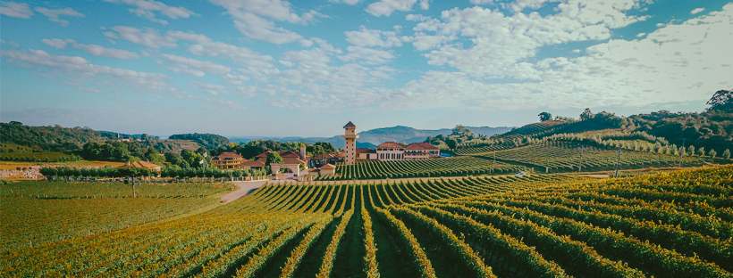

Nossa História
Fundada em 1985, a Vinharia Agnello nasceu da paixão por vinhos artesanais e da tradição familiar que atravessa gerações. Localizada no coração da Serra Gaúcha, nossa vinícola é reconhecida pela produção de vinhos que misturam técnicas antigas com inovação.
Hoje, a Vinharia Agnello é sinônimo de qualidade, sofisticação e respeito à natureza. Cada garrafa conta um pouco da nossa trajetória.